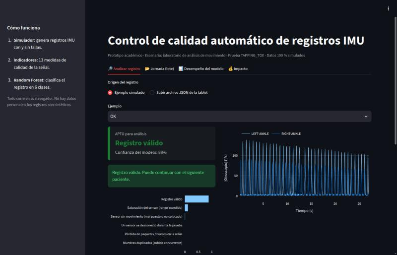
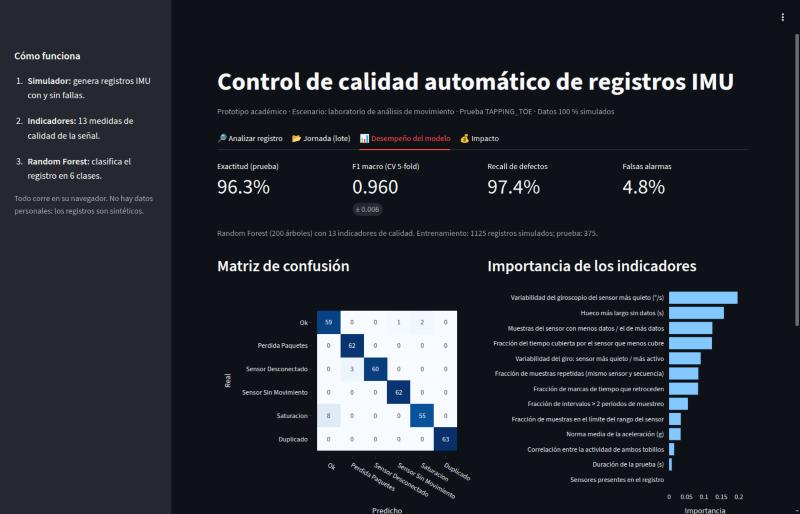
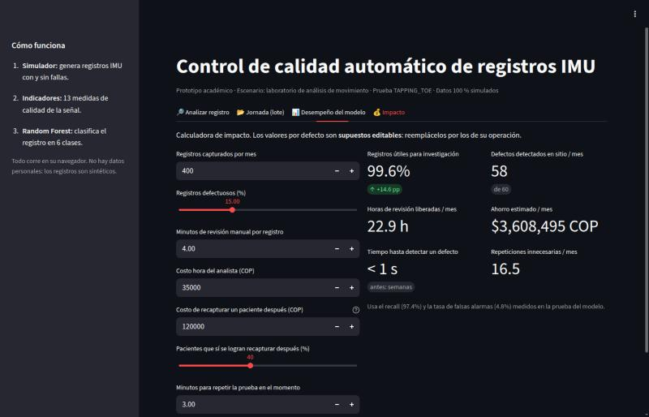

Detección automática de registros de sensores defectuosos en un laboratorio de análisis de movimiento
Un modelo de machine learning revisa cada prueba en el momento en que se captura y avisa si los datos quedaron dañados, para que el fisioterapeuta la repita mientras el paciente sigue presente.
El prototipo corre completo en su navegador (no hay servidor). La primera carga tarda entre 30 y 60 segundos. Todos los datos son simulados: no contiene datos personales.
Resumen en 30 segundos
Muchas pruebas llegan con datos dañados (huecos, sensores desconectados, archivos duplicados o vacíos) y el daño se descubre semanas después, cuando el paciente ya no está.
Un clasificador Random Forest calcula 13 indicadores de calidad de la señal y diagnostica el registro en menos de un segundo: válido o uno de 5 tipos de falla, con una acción sugerida.
Detecta el 97,4 % de los registros defectuosos con 4,8 % de falsas alarmas. En el escenario base, los datos útiles pasan del 85 % al 99,6 %.
Contexto: qué es cada cosa
El escenario es un laboratorio universitario que evalúa la función motora de pacientes (por ejemplo, adultos mayores o personas con enfermedades neurológicas) con sensores portátiles, tanto en su sede como en campañas de campo en otras ciudades.
Sensor IMU
Una unidad de medición inercial es un dispositivo pequeño que se sujeta al cuerpo y mide movimiento. Tiene un acelerómetro (cambios de velocidad, en unidades de gravedad g) y un giroscopio (velocidad de rotación, en grados por segundo). En este escenario se usan dos, uno en cada tobillo, enviando unas 50 muestras por segundo por Bluetooth.
La prueba TAPPING_TOE
El paciente, sentado, golpetea el suelo con la punta de los pies durante 20 a 40 segundos. La frecuencia, el ritmo y la simetría del golpeteo entre ambos pies sirven para evaluar la coordinación motora. En la señal se ve como una serie de picos regulares en el giroscopio de cada tobillo.
El recorrido del dato
El problema
Cada falla deja una huella distinta en la señal. Hoy nadie la revisa en el momento de la captura:
| Falla | Qué pasa | Cómo se ve en los datos |
|---|---|---|
| Pérdida de paquetes | Distancia o interferencia entre la tablet y los sensores | Huecos de 0,3 a 1,5 s sin muestras |
| Sensor desconectado | Batería baja o caída del Bluetooth a mitad de la prueba | Un tobillo deja de tener datos antes del final |
| Sensor sin movimiento | Sensor mal colocado o flojo | Un tobillo casi no varía mientras el otro golpetea |
| Saturación | Golpes directos al sensor | La señal se "aplana" en el límite del rango del sensor |
| Duplicado | Dos procesos suben el mismo archivo a la vez | Muestras repetidas con el mismo número de secuencia |
| Archivo vacío o ilegible | Error al guardar o al subir | El archivo no se puede leer o no trae muestras |
Por qué importa
Recapturar exige transporte, otra cita y tiempo del fisioterapeuta. En campañas de campo muchas veces es imposible.
Revisar la calidad de cada registro a mano toma varios minutos de un analista.
Los registros dañados que nadie detecta sesgan los resultados de los estudios.
La oportunidad
Mover la detección del final del proceso al momento de la captura. Si la tablet sabe en un segundo que la prueba salió mal, el fisioterapeuta la repite ahí mismo, con el paciente presente.
La solución
1. Indicadores de calidad (ingeniería de características)
El modelo no mira las miles de muestras crudas: primero se resume cada registro en 13 números que describen su calidad. Los más importantes para el modelo:
| Indicador | Qué detecta |
|---|---|
| Variabilidad del giroscopio del sensor más quieto | Sensor sin movimiento o flojo |
| Hueco más largo sin datos | Pérdida de paquetes |
| Muestras del sensor con menos datos / el de más datos | Desconexión de un sensor |
| Fracción del tiempo cubierta por el sensor que menos cubre | Desconexión y huecos |
| Fracción de muestras repetidas | Archivo duplicado |
| Fracción de muestras en el límite del rango | Saturación |
2. Modelo: Random Forest
Un Random Forest es un conjunto de árboles de decisión: cada árbol aprende reglas del tipo "si el hueco más largo supera X segundos, entonces…" y el diagnóstico final es la votación de todos los árboles. Se eligió porque:
- funciona muy bien con pocos indicadores tabulares y pocos datos;
- entrega probabilidades por clase (la "confianza" del diagnóstico);
- muestra qué indicadores pesan más, lo que facilita explicar sus decisiones;
- es liviano: predice en milisegundos y podría correr dentro de la tablet.
3. Diagnóstico accionable
Cada clase trae una instrucción concreta para el personal clínico. Por ejemplo, ante una pérdida de paquetes: "Acerque la tablet a los sensores y verifique la batería. Repita la prueba ahora."
Datos simulados
El prototipo usa solo datos sintéticos. No contiene registros de pacientes ni datos personales.
- Un simulador genera el golpeteo de ambos tobillos (picos periódicos alternados entre pies, con fatiga, ruido del sensor y la variación de tiempos típica de Bluetooth) con el mismo formato JSON que produciría la tablet.
- Sobre esas señales se inyectan las 5 fallas con intensidades variables: desde fallas evidentes hasta casos sutiles, para que el problema no sea trivial.
- Se generaron 1.500 registros (250 por clase): 1.125 para entrenar y 375 para evaluar.
Simular tiene una ventaja clara: cada registro viene con su etiqueta exacta (qué falla tiene), algo costoso de conseguir con datos reales. La desventaja se discute en Limitaciones.
Métricas del modelo
De cada 100 registros dañados, detecta 97. Es la métrica principal: un defecto que se escapa es un paciente perdido.
Registros válidos marcados como dañados: repeticiones innecesarias.
Diagnósticos correctos entre las 6 clases.
± 0,008 entre 5 particiones: el resultado es estable.
| Clase | Precisión | Recall | F1 |
|---|---|---|---|
| Registro válido | 0,88 | 0,95 | 0,91 |
| Pérdida de paquetes | 0,95 | 1,00 | 0,98 |
| Sensor desconectado | 1,00 | 0,95 | 0,98 |
| Sensor sin movimiento | 0,98 | 1,00 | 0,99 |
| Saturación | 0,96 | 0,87 | 0,92 |
| Duplicado | 1,00 | 1,00 | 1,00 |
La clase más difícil es la saturación leve, que el modelo a veces confunde con un golpeteo válido muy vigoroso.
Métricas de impacto
Escenario base (supuestos editables en la pestaña Impacto del prototipo): 400 pruebas al mes, 15 % con fallas, 4 minutos de revisión manual por prueba, COP 35.000 por hora de analista, COP 120.000 por recaptura y 40 % de pacientes que se logran recapturar.
| Indicador | Hoy | Con la solución |
|---|---|---|
| Registros útiles para investigación | 85 % | 99,6 % (+14,6 puntos) |
| Tiempo hasta detectar una falla | Días o semanas | Menos de 1 segundo |
| Fallas detectadas con el paciente presente | 0 de 60 al mes | 58 de 60 |
| Horas de revisión manual liberadas | — | ~23 h al mes |
| Ahorro estimado | — | ~COP 3,6 millones al mes |
| Repeticiones innecesarias (costo de las falsas alarmas) | — | ~16 al mes |
El prototipo
Una app de Streamlit con cuatro pestañas. Se ejecuta con stlite, que corre Python en el navegador, por eso puede publicarse en GitHub Pages sin servidor. Al abrirla, entrena el modelo con los datos simulados.
- 🔎 Analizar registro
- Elija un ejemplo simulado (o suba un JSON con el mismo formato) y vea el diagnóstico, la confianza, la señal de ambos tobillos y qué indicadores quedaron fuera del rango normal.
- 📂 Jornada (lote)
- Diagnostica todos los registros de una jornada a la vez y dice cuáles repetir.
- 📊 Desempeño del modelo
- Métricas, matriz de confusión e importancia de cada indicador.
- 💰 Impacto
- Calculadora de los indicadores de negocio con supuestos editables.



Limitaciones y siguientes pasos
- Datos simulados. El desempeño real puede ser menor: las fallas reales son más variadas que las simuladas. El siguiente paso es etiquetar registros reales defectuosos y reentrenar.
- Una sola prueba. Otras pruebas motoras (marcha, equilibrio) necesitan sus propios rangos y ejemplos.
- Supuestos de impacto. Los costos y tasas del escenario base son estimaciones a validar con la operación real.
- Integración. Llevar el modelo a la tablet o al servidor de subida para alertar en tiempo real.
Glosario
- IMU
- Unidad de medición inercial: sensor con acelerómetro y giroscopio.
- Bluetooth (BLE)
- Conexión inalámbrica entre los sensores y la tablet; puede perder paquetes.
- Saturación
- Cuando el movimiento supera el rango máximo que el sensor puede medir y la señal se recorta.
- Clasificación
- Tarea de ML que asigna cada registro a una categoría (aquí, 6 clases).
- Precisión
- De los registros que el modelo asignó a una clase, cuántos eran realmente de esa clase.
- Recall
- De los registros que eran de una clase, cuántos encontró el modelo.
- F1
- Promedio armónico de precisión y recall.
- Falsa alarma
- Un registro válido que el modelo marca como dañado.
- Matriz de confusión
- Tabla que cruza la clase real con la predicha; la diagonal son los aciertos.
- Validación cruzada
- Entrenar y evaluar varias veces con particiones distintas para medir la estabilidad.
Repositorio
| Archivo | Qué hace |
|---|---|
src/simulador.py | Genera registros IMU sintéticos e inyecta las 5 fallas |
src/features.py | Calcula los 13 indicadores de calidad |
src/modelo.py | Configuración del Random Forest y la partición de datos |
src/train.py | Simula el dataset, entrena, evalúa y guarda métricas y ejemplos |
app.py | Interfaz en Streamlit |
app/index.html | Ejecuta la app en el navegador con stlite (GitHub Pages) |
Para correrlo localmente con Python:
pip install -r requirements.txt python src/train.py # opcional: regenera datos, métricas y ejemplos streamlit run app.py